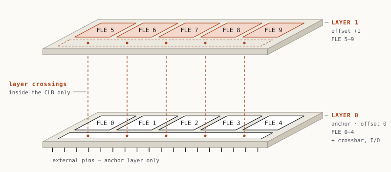
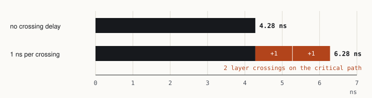

Projects / 01
A logic block that spans two layers
FPGAs are flat. 3D chips aren't. I extended the open-source VTR toolchain so a single configurable logic block can split its logic across two stacked dies, and checked the result all the way down to a programmed, simulated fabric.

The problem
An FPGA is a grid of configurable logic blocks (CLBs) connected by programmable wiring. Every tool in the open-source flow, VTR included, assumes that each block sits on exactly one layer of silicon. That assumption breaks as soon as you stack dies. In a 3D FPGA the most interesting designs put part of a block on one die and part on another, so that short vertical links replace long horizontal wires.
Before you can measure whether that helps, the CAD tools have to be able to describe such a block, pack a circuit into it, place it, route it, time it, and generate hardware for it. When I started, none of those steps knew what a split block was.
The approach
I added two attributes to VTR's architecture description. A tile can declare how many layers it occupies, and any internal block can list a layer offset for each of its instances:
<tile name="clb" layer_span="2">
<pb_type name="fle" num_pb="10"
instance_layer_offsets="0 0 0 0 0 1 1 1 1 1">Offsets are relative to the parent, not absolute. A logic element's layer is the sum of the offsets on the path up to the CLB, plus the layer where the CLB was placed. That keeps the block's internal shape the same wherever it is reused, and it meant I never had to store absolute layers in VTR's shared block graph, which every placed CLB points to.
From there the work was making each stage of the flow respect the new geometry:
- Parsing and validation. Reject offsets that don't fit inside the span, in every operating mode of the block, not just the default one.
- Device grid. Reserve the cell above each spanning tile, and reject overlaps or tiles that stick out the top of the device.
- Placement. Only choose legal anchor layers, and never place onto a reserved cell.
- Timing. An optional per-crossing delay is added to every internal connection that changes layers.
- Output. After routing, report which layer every LUT and internal connection landed on, and tag the post-route netlist with those layers.
I also patched OpenFPGA, which turns a VTR architecture into real Verilog for the fabric, so that every generated logic element carries its layer as an attribute that a physical-design tool can read later.
Proving it works
"VPR didn't crash" is not evidence. I set up checks that each answer a different question:
- Unit testsOffset parsing, bounds, placement legality and utilization counting.
- 24 full VPR runsIncluding cases that must fail: overlapping tiles, spans that are too short, occupied anchors, pins on the upper layer.
- Post-route netlist simulationEvery one of 64 input vectors checked on all 10 outputs against a reference model.
- Generated fabricOpenFPGA builds the fabric and a 9,316-bit bitstream; the configured fabric is simulated against the same 64 vectors.
- Negative controlI deliberately swap two outputs and confirm both simulations catch it, so a pass actually means something.

The outcome
| Check | Result |
|---|---|
| Unit tests | All pass |
| VPR suite | 24 / 24 |
| Packing | 10 LUTs in one CLB, 5 per layer, two stacked cells |
| Netlist simulation | 64 vectors × 10 outputs ✓ |
| Bitstream | 9,316 config bits |
| Configured fabric | 64 vectors × 10 outputs ✓ |
| Planted output swap | Caught by both simulations |
Past the CAD changes, I took the generated CLB on its own and kept pushing: programming it through its 1,700-bit configuration chain, assigning every internal component to layer 0 or 1, synthesizing it to the Nangate45 cell library, and running a single-die OpenROAD place-and-route as a baseline. A 44-case functional simulation suite checks the RTL, the synthesized netlist and the post-route netlist against each other. That surfaced real findings, like flip-flop models that react to reset edges while the library cell is level-sensitive, and a clock input with no loads.
Fixing the framework underneath
My work builds on LaZagna, an open-source 3D FPGA framework that won Best Paper at ICCAD 2025. Along the way I found that its RTL generation failed for 3 of its 6 architecture types, and traced it to an interlayer port declared 88 bits wide on one side and 86 on the other. I also fixed a build failure that hit anyone starting from a clean clone.
What I learned
The hard part of a research tool isn't the feature. It's knowing when you can trust the answer.
Most of my time went into negative tests and controls, not the feature itself. I also learned to read and change a large C++ codebase I didn't write, to be honest about limits in writing (the crossing delay is illustrative, upper-layer pins aren't supported yet), and to explain a design clearly enough that someone else can pick it up.
Add a sentence or two in your own words: what surprised you, what was hardest, who you worked with.
Next steps
- Pins on the upper layer and vertical routing between tiles.
- Real vertical-link parameters (pitch, resistance, capacitance, drivers) instead of a placeholder delay.
- A physical-design flow that actually reads the layer attributes.